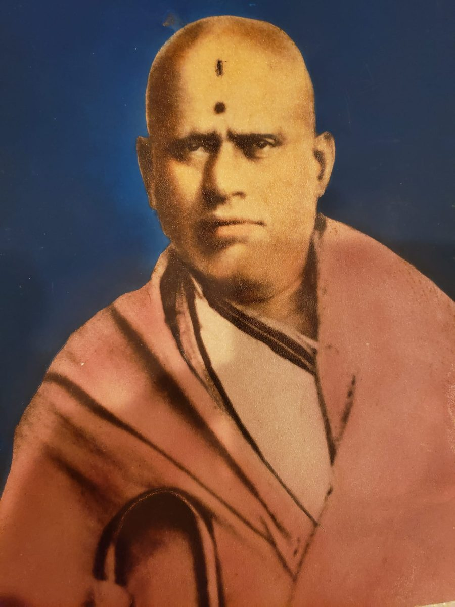
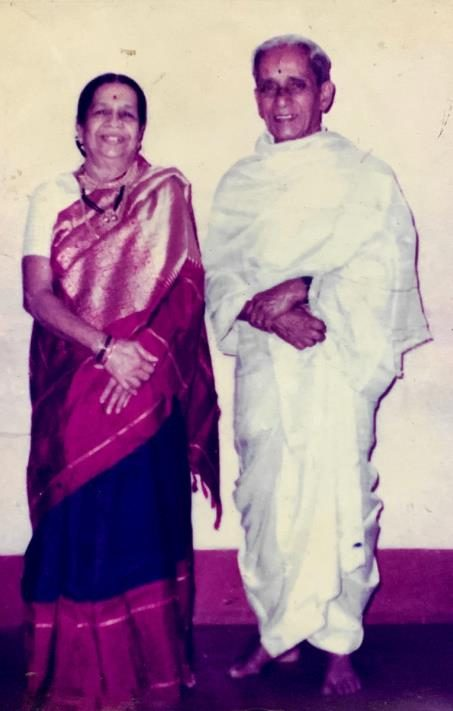
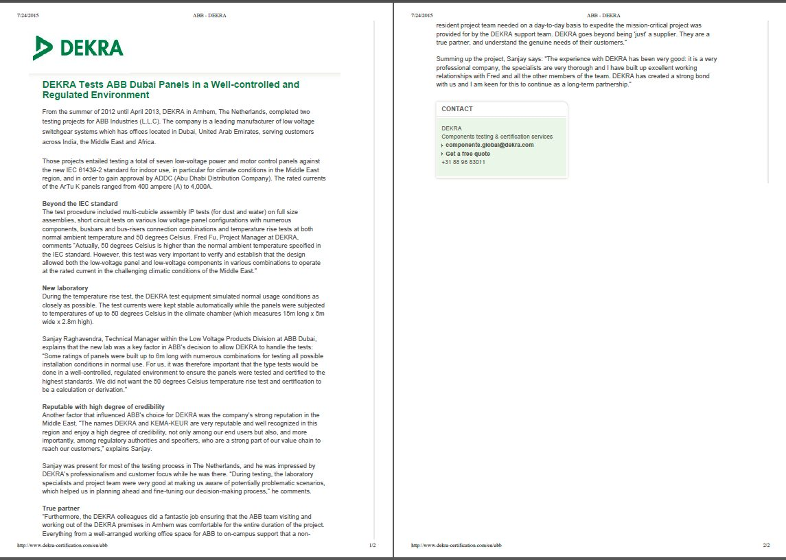
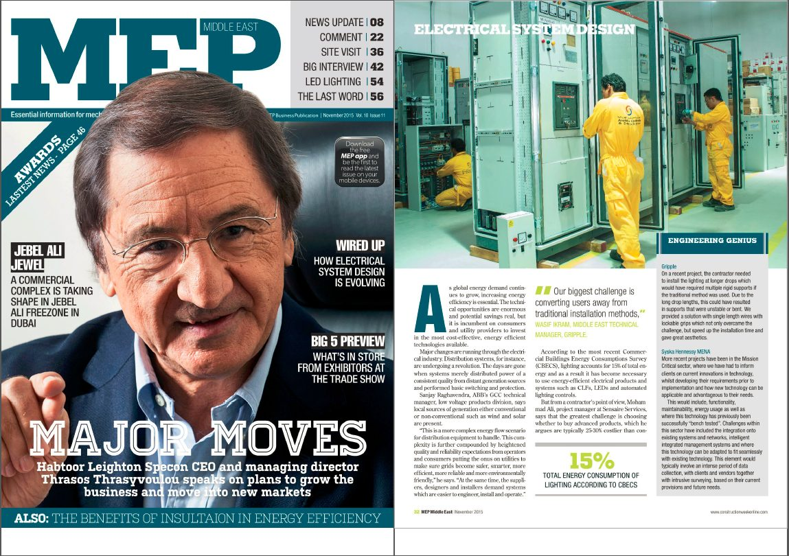
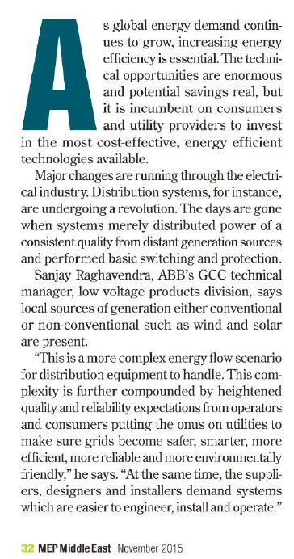

Plaque photographs by KG Haridasan, from “75 Years Legacy”, Department of Civil Engineering, Indian Institute of Science, 2025.
Dear friends, partners and members of our family and the wider community,
When we look at what our family’s work has become, we feel deep gratitude. What began as a family’s belief in learning, honest work and service has grown across many sectors.
From energy to learning, each activity has its own work, but they all share one purpose: to create lasting value for people and communities. A new venture is not only a business. It creates jobs, builds skills and gives families the chance to build a better life. We ask our teams to remember that behind every number there are people who depend on us.
Growth will need discipline as much as ambition. We ask every new venture to hold the same standards as the first: quality, fairness and care for the long term.
A word to the people who serve each of our sectors Every sector needs two kinds of people. Specialists bring deep skill in one field. Generalists see the whole picture and join the pieces together. We need both, and we ask you to respect and learn from each other.
Notes to each sector Education and development To our teachers, trainers, counsellors and the people who run our schools and programmes: you shape lives. Specialists, bring your subject and your care for children with special needs and autism. Generalists, keep our learning places well run, safe and open to every ability. Learning will always be close to our hearts.
Sustainability To our engineers, data and cloud specialists, and the field teams in our villages: you bring safe, smart and secure technology to the places that need it most. Specialists, make the technology simple and reliable. Generalists, work hand in hand with government schemes, foundations and village communities. Put the rural and the underserved first, always.
Outer space projects To our scientists, engineers and the managers of our space ventures: you work at the edge of what is possible. Specialists, aim high and test carefully. Generalists, manage capital, partners and timelines with patience. Space teaches humility, and we ask you to carry it with you.
Commercial enterprises and management To our traders, transport and contracting teams, and our finance professionals: you keep goods, money and promises moving. Specialists, master your trade and your numbers. Generalists, hold the businesses together and keep every partner's trust. A fair deal today brings a partner for life.
Agricultural enterprises and management To our farmers, agronomists, livestock and fisheries experts, and the people who take crops to market: you feed people. Specialists, care for the soil, the animals and the sea. Generalists, build fair markets and stable incomes for farming families. Treat the land and nature which feeds us as you would treat your own mother.
Sport enterprises and development To our coaches, facility managers and sports project teams: you build health, discipline and team spirit. Specialists, keep our grounds and programmes of the highest standard. Generalists, open them to young people from every background. Sport builds character, and character builds a nation. A nation with character befriends other nations.
Technology for life sciences and healthcare To our doctors, scientists, digital and AI specialists in health: your work touches lives directly. Specialists, keep patient safety and good science above all. Generalists, turn good ideas into services people can reach and afford. Use every new tool, including AI, with care and honesty.
Micro, small and medium enterprises To the people who support our small businesses, trainers, certifiers and employers alike: small businesses are the backbone of the economy. Specialists, help owners and workers learn new skills as technology changes. Generalists, connect education, workers and employers so no one is left behind.
Communications and connected devices To our ICT engineers, network and device specialists, and digital teams: you connect people, places and machines. Specialists, build systems that are secure and dependable. Generalists, make sure the technology serves people and not the other way around.
Industrial enterprises and management To our plant managers, engineers, mining and processing teams: you make the materials the world depends on. Specialists, run every operation safely and efficiently. Generalists, plan for the long term and care for workers and neighbours. No target is worth an unsafe day.
Water enterprises and development To our water engineers, planners and project teams: water is life. Specialists, design and run our infrastructure so it lasts for generations. Generalists, work with communities and governments so clean water reaches every home. Waste not a single drop.
We are proud of the HFL Way. It asks us to act with honesty, to keep our promises, to treat every partner fairly and to care for every natural element, earth, water, air, fire and space, and for the people around our projects. These values have guided our family for many years, and we are happy to see the next generation carry them forward. So, in every transaction, in the marketplace and in the workplace, we ask you to put people before profits. Choose what is sustainable and repeatable over winning every opportunity. And put the customer’s experience before a quick sale. Business built this way may grow a little slower, but it lasts, and it earns trust that no money can buy.
To Sanjay and Rachana: you have our full trust and our blessings. With our whole family, and in loving memory of those who came before us, we ask you and the whole leadership team to lead with humility, to decide with courage, and never to forget why we started.
To everyone who walks with us: to our authors, trainers, mentors, facilitators, academicians and advisors; to our learners, earners and alumni, and the parents and families who support them; to our customers and members; to our employees, their families, and our full-time, part-time, fractional and gig colleagues; to our technologists, specialists, generalists, professionals and vocational workers; to our consultants and specifiers; to the Industry 4.0 and Industry 5.0 competence developers who improve our people, spaces and processes across the workspace, the workflow and the workforce; to our farmers, artisans, field teams, and resilience and recreation workers; to our MSMEs, contractors, service providers and suppliers; to our partners, certifiers and employers; to the governments, regulators, foundations, NGOs and volunteers who work beside us; to the villages and communities who welcome our projects; and finally to the lenders and investors who gave us our start: thank you. We value your trust more than any contract, and we will work every day to deserve it, for you and for the generations still to come.
To our young colleagues: keep learning every day. In this 21st century ecosystem, the world of energy is changing fast, and curious, hard-working people will shape it.
From the golden seed, all things are born.
May this work bring light, prosperity and well-being to all.
Hiranyagarbha Phalaprada Lokahitaya.
With warmth and gratitude,
Mr. VR Raghavendra & Mrs. Meera R
I was born into a joint family. My first teachers were the people in our home and the people who lived in our block within the community: homemakers, teachers, engineers, doctors, lawyers, bankers, sportspeople and artists. As a toddler I passed from one pair of loving hands to another, and learned from each.
As a boy I stepped out into the open, friendly neighbourhood around our house. Elders from every walk of life became my first school. I learned simply by watching how they lived: cheerful, simple, kind and grateful. They loved life and work, met good times and hard times with calm, and always leaned on each other. It was a tight-knit community. I could have breakfast at home, lunch at one neighbour's house and dinner at another's.
I was a curious child, and I took it all in. Long before I learned the words “leadership” and “ownership” at school, I had already seen them lived. Those lessons never faded. They became my life truths.
Work later brought me to the UAE, where I have lived and worked for 30 years now, alongside people of more than 50 nationalities. Unlike many places, the UAE welcomes every culture and, in doing so, creates a pattern of its own, one that brings people of all backgrounds together as one. People grow in the UAE, and that has been my learning. People grow when someone listens, teaches, trusts and engages them.
For 30 years I have worked in electrical engineering, electromechanical systems, telecom, and media and broadcasting. I began as an order handling engineer and grew into sales, projects, technical management and training. I handled capital projects worth billions of dollars for leading builders, infrastructure, industries and utilities in the UAE. I also led teams and headed a regional academy for technical, sales, services and channels training at a global electrification leader. Between 2003, when we implemented this, and 2016, it led to a ten fold revenue growth across the MEA region. The crown jewel of that experience came when I was trusted, as a new product expert, to work with the R&D team in Italy to build an intelligent compact low-voltage switchgear system, tested at an independent laboratory in Italy, for two iconic landmark projects which made Dubai world famous in 2009. It is the capstone of a career for any energy professional. I worked alongside greats who to this day call me a friend. Friends like these are worth more than money can earn. Training became a daily habit, and the habit became a mantra: Learn it to Earn it. That is what it really means. Today it has grown into Learn it, Author it, Train it, so that all can Earn it.
The House for Learning journey began in July 2011, when my school headmaster inspired many of us in my batch to stop being job seekers and become job creators. A growing family meant I could make it happen only in this decade. Along the way, teachers, doctors, statesmen and sportsmen, many of them known to me through my father, inspired me to reach this milestone. They also encouraged me to complete a postgraduate degree at an international business school, where I earned lifelong relationships with some great people who are now part of this journey. It is my earnest wish that you get to engage with them, and experience them as fondly as I do whenever I have the chance.
I hold an Executive MBA and a Bachelor’s degree in Electrical Engineering, and I am a Chartered Engineer.
My principle is simple: Touch, Move, Inspire. I want to help each person find a smart, safe, secure and sustainable career, and discover their own potential. I try to be the difference I wish to see in the world.
This knowledge and experience should not wither away with me in time. So I have turned what I learned into a systematic process, to benefit the 100 to 150 million white-collar and blue-collar professionals in the energy sector.
I want young people to pick this up from where professionals of my generation have left it, and to build it further. I am still here to help you along the way, for you and for the projects you help build in this world. It is my daily communion with my maker that the platform and the ecosystem I am setting up continue to serve millions of workers around the world long after I am gone. I am also training my children to facilitate the ecosystem, so that my work continues beyond me.
If you love your work and enjoy doing things differently, come and take your place in the Author it, Train it, Learn it, Earn it (ATLEit ).
Sanjay R Acharya
See the energy journey: 150 years behind us, 150 ahead.
Read the Acharya family story, with the original letters, photographs and press cuttings.
Our roots: a family of exemplars
What follows comes from a value system and a belief system in which being an exemplar, and pursuing excellentia , has always come first in our family, before anything else.
1. Our roots, the Acharya belief system
AHFL comes from a lineage of Rajagurus, the teachers of kings across India’s 560 princely states: the Wadeyars, the Saluvas, the Tuluvas, the Rayas and the Ahoms. The line reaches back to the sages Agasthya and Vasishta, of the Kaundinya lineage. The same lineage which guided Bharatavarsha to set up and name the oldest largest university the chinese, greeks etc., captured in their travelogues
So we do not join someone else’s ranking. We set the standard following the aggregated wisdom of both the old and new . We measure what education produces: how people in the AI era can who rule and regulate themselves, lead others, build wealth, invent, serve, and in turn become teachers.
The Rayas of the Vijayanagara Samrajaya and the Wadeyars, among the richest scions the world has known, are proof enough to back it up. And the world still remembers and celebrates Rama Rajya, in the time of Agasthya and Vasishta of the Kaundinya lineage.
Values come from beliefs. This is the Acharya belief system. In Karnataka, where the family finally settled, the title was conferred by occupation, not by lineage alone. It is the only place in Bharatavarsha where this practice survives even today, and it does not just survive, it thrives.
The most recent links in this chain are Sri Shamacharya, Sri V.S. Ramacharya and Sri V.R. Raghavendra Acharya. AHFL carries the same calling forward: teaching, not kings now, but every learner who comes along evolve as a trainer, earner and author.
From the family records
Pujya Shri. V. Shyamacharya

Pujya Shri. V. Shyamacharya. Open full size Titles conferred at all India Level and at the Mysore Palace during the regime of Shri. Nalvadi Krishna Raja Wadeyar, and Shri. Jaya Chama Rajendra Wadeyar: Asthana Maha Vidwan, Panditha Rathna, Shasana Vidya Vibhushana, Maha Mahapodhyaya.
Held the following positions:
Curator: Oriental Library. Director: Department of Archeological Studies. Principal: Samskritha Maha College. Asthana Maha Vidhwan. Invitee on the “Panel of discussions” on various subjects, by the kings Nalvadi Krisnaraja Wadeyar and Jaya Chama Rajendra Wadeyar, and by the Samskritha College, the Baroda Palace, Banaras Hindu University and others. Children:
Pujya Shri. VedaVyasacharya (IAS): 1st Collector of the then Mysore State (now Karnataka); CEO of India Steamship Company; served as a sitting Member of the Parliament during the later years.
Pujya Shri. Ramacharya (BE in Civil Engineering): Gold Medalist Civil Engineer, and Gold Medalist Scholar in Samskritha and Music.
Shri. Jayacharya (BA, LLB): retired as Specialist First Class Magistrate of the Karnataka Court; Under Secretary to the Government of Karnataka; Huzur Secretary to his Highness Sri. Jaya Chama Rajendra Wadeyar at the Mysore Palace.
Sri. Anantacharya (Double MA: Mathematics and Samskritha): Professor of Mathematics at Ramaiah University; Reader in Bengaluru University.
Sri. Sripadarajacharya (BE in Electrical Engineering): retired as Chief Engineer in the Tamil Nadu Government Electricity Board.
Sri. Narasimha Murthy (BE in Electrical Engineering): retired as Chief Engineer in the Andhra Government Electricity Board.
Smt. Krishna (BA in English): Homemaker. Pujya Sri. Ramacharya and Smt. Rukumini Bai

Pujya Sri. Ramacharya and Smt. Rukumini Bai. Open full size Civil Engineer from UVCE, Bengaluru. Employee of CPWD; led several dam and road development projects. Design and development of the Indian Institute of Science. Retired as the Chief Engineer, IISc. On the board of Canara Bank and SBM, and led the H.Q. and satellite branches infrastructure development across Karnataka. The Acharya family story, in the founder's own words Where the line came from Shyamathatha's parents were in Mulbagal, and their parents and grandparents probably hailed from Vijayanagar. They were all great scholars, according to dad. Annoru (Sri Vedavyasacharya) was born in the year 1895, so thatha, at a rough guess, must have been around 30 years of age. Anna thatha was born in the year 1905. Krishnaraja Sagar dam went into construction around 1900. The jewellery was sold roughly around this period. It is all firmly planted in the head; it is difficult to produce documents.
Sri V.S. Ramacharya Shri. Ramacharya (An outstanding student, excellent sportsman, footballer of class, gymnast and body builder who trained under Sri. K.V. Iyer (Kolar Venkatesh Iyer, known as K. V. Iyer (1897-1980) was a gymnast, bodybuilder, proponent of Indian physical culture, and author of books including the 1930 Muscle Cult: A Pro-Em for My System. He contributed to the development of modern yoga as a system of exercise. He was "possibly the most high-profile Indian advocate of physical culture in the first half of the twentieth century"), University and IISc team footballer, Gold Medalist with BE in Civil Engineering from UVCE): All India Gold Medalist Scholar in Samskrutha, Gold Medalist in University Music Competition; Shri. Ramacharya, a champion in civil engineering was invested to develop several mission critical infrastructure projects, spanning across building of dams, buildings and roads (starting from the mountains of Uttara Karnataka, construction of the dam in Jwalapuram, Banaganapalli district of Andhra Pradesh, and taking on projects across India (State and National Highway Roads (Ghat sections & Tunnels) & Dams). He is recipient of several awards from the Royal Order for delivering these projects including Copper nameplates mounted on the project sites; Gold medallions, Silver plates & Trowels given as awards, with State and National Highway points landmarked with Shri. Ramacharya's name to stand in testimony of his contributions across South and Central India). As a Humanist to the core he is recipient of the Rotary Award for Excellence in Service to Humanity.
When Maharaja (H.E.) Krishna Raja Wadiyar gave 371 acres of land and five lakh rupees to Shri. J N Tata on 14 March 1907 to start a science institution in Bengaluru, Shri. Ramacharya the late Grand father of HFL founder was appointed as the Chief Engineer to develop the project that is today world renowned as the Indian Institute of Science. He was a close associate of late Shri. Manickyam (who was a chief engineer and architect in the state public works department, and in charge of the construction of the Vidhana Soudha). Shri. Ramacharya was engaged in an advisory capacity for the design and construction of the Vidhana Soudha in its Mysore Dravidian style of architecture featuring several elements of the Indo-Saracenic and Dravidian style. Post completion of this project he was nominated as the Chief Engineer to design and build landmark State Bank of Mysore Building on Kempe Gowda Road in Bengaluru and some of its branches across Karnataka.
As a young boy the founder accompanied his grand father to the under construction project of State Bank of Mysore Building on Kempe Gowda Road. It was a great experience to see how he always brought a humanitarian aspect in his working life to all things in general. To him the staff working under him was a family to be guided at all times in their working life and living life well in general. He was much respected for his wisdom and humanitarian approach with the entire family becoming a beneficiary of this love and respect he earned from the communities he served.
Anna thatha joined Indian Institute of Science in the year 1944-1945 after meritorious services to the state of Andhra Pradesh between 1939 and 1944. His job was to construct a dam in Jwalapuram coming under Banaganapalli, a district of Andhra Pradesh. He was highly praised for its execution working under highly difficult working conditions.
On record The foundation stone of the Hydraulic Research Laboratory at the Indian Institute of Science, laid on 10 April 1951 by Dr. Rajendra Prasad, President of India, names V.S. Ramacharya as Engineer-in-Charge and B.R. Manickam as Architect. The building's opening plaque, unveiled on 16 June 1953 by Sri K. Hanumanthaiah, Chief Minister of Mysore, names them again in the same roles. Source: the IISc Department of Civil Engineering commemorative booklet, which reproduces photographs of both plaques.
2. Sanjay, the engineer who builds what lasts
Sanjay Raghavendracharya is a Chartered Electrical Engineer, with about 30 years in the energy sector, in power and automation.
For more than 10 years Sanjay led teams on some of the best-known buildings and transport projects in the Gulf:
Burj Khalifa, Dubai Dubai Metro Mall of the Emirates, Dubai Etihad Towers, Abu Dhabi Ferrari, Yas Marina, Abu Dhabi Centro Rotana, at the Abu Dhabi Formula 1 circuit On the Burj Khalifa and the Dubai Metro, Sanjay’s team worked with the client and partners to design and test a prototype of a compact, intelligent power distribution system. Sanjay then managed the project work and after-sales care for both. The product later became popular across the region.
At ABB, Sanjay looked after products and projects from start to finish, built and certified sales channels across the GCC countries, and led the Electrification Academy for ABB’s Middle East and Africa cluster, covering technology, design, promotion, support and training.
Honours
Honours received by Sanjay Year Honour
1996 OTIS Elevator India Ltd: Benchmarking Executive 2011 ABB: Distinguished Service Excellence Award July 2015 Featured in DEKRA (Germany) global magazine November 2015 Featured in MEP Middle East magazine
The Electrification Academy is where teaching and building first came together in Sanjay’s working life. House for Learning carries that same idea to everyone: learn, build, teach, earn.
In the press

DEKRA (Germany) global magazine, July 2015: “DEKRA Tests ABB Dubai Panels in a Well-controlled and Regulated Environment”. Both pages, in full. Open full size 
MEP Middle East magazine, November 2015: cover and the “Electrical System Design” feature. Open full size 
MEP Middle East, November 2015, page 32: the column quoting Sanjay Raghavendra, ABB’s GCC technical manager. Open full size